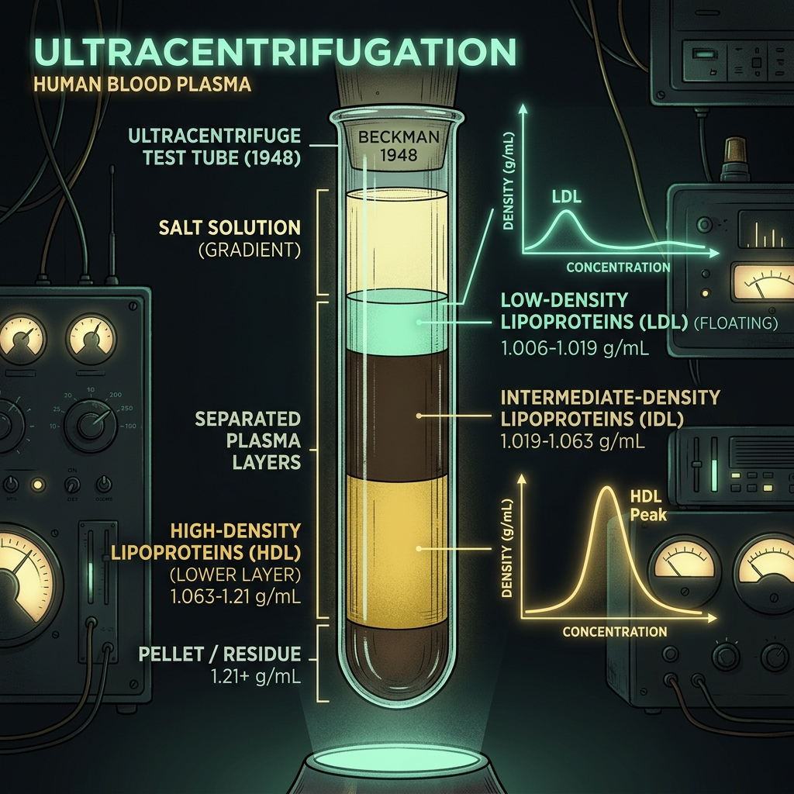
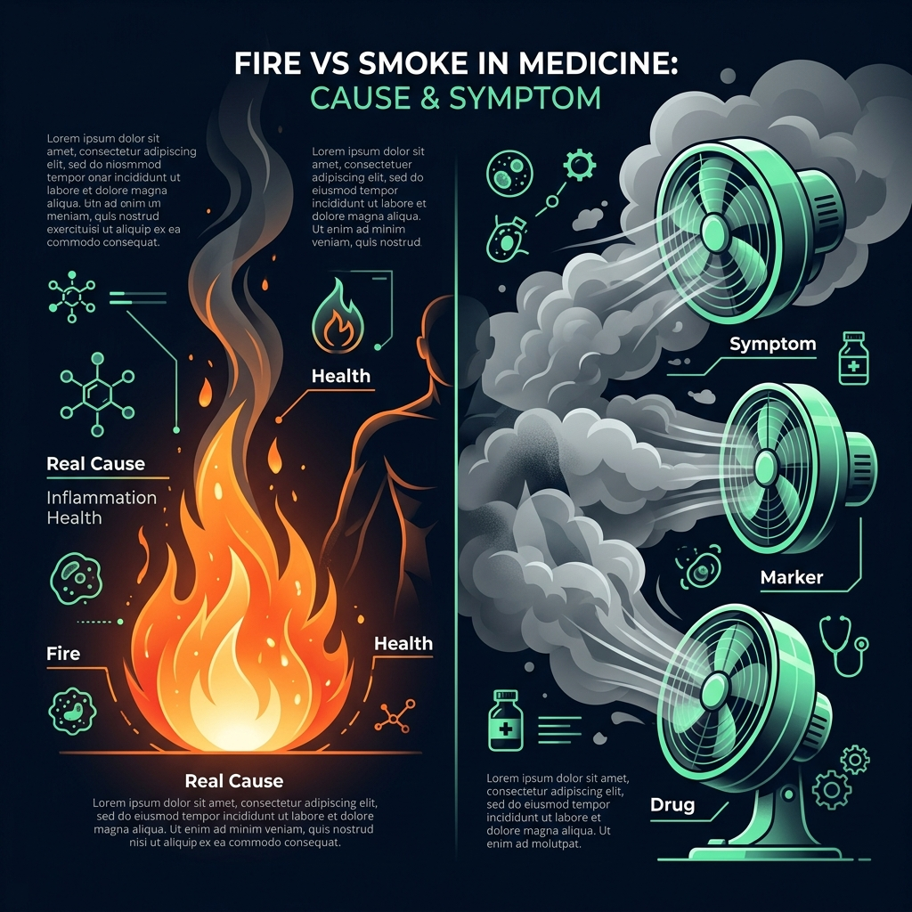

La Filosofía del Maestro The Master's Philosophy
Jose M. Castillejo Jose M. Castillejo
"Cuando te dan el resultado de tu analítica, vas directo a buscar la línea del colesterol y miras si está en rojo. En medio segundo decides cómo te vas a sentir el resto del día. Pero... ¿realmente sabes lo que significa ese número? Vamos a desmontarlo letra por letra." "When you get your blood lab test, you go straight to the cholesterol line and check if it's in red. In half a second, you decide how you feel for the rest of the day. But do you really know what that number means? Let me break it down word for word."
Una sola molécula One single molecule
Donde pone "malo" y "bueno" hay exactamente la misma molécula, idéntica átomo por átomo. Where it says 'bad' and 'good', there is the exact same molecule, identical atom by atom.
Vehículos, no colesterol Vehicles, not cholesterol
LDL y HDL no son dos tipos de grasa, sino los camiones contenedores que transportan la carga. LDL and HDL are not two types of fat, but the container trucks transporting the cargo.
El Humo vs. El Fuego Smoke vs. Fire
Medir la cifra no apaga el incendio. La HDL alta es la señal de estar sano, no la causa directa. Measuring the number doesn't extinguish the fire. High HDL is a sign of health, not its cause.
1. El Gran Revelación: Los 3 Datos que la Analítica no te cuenta 1. The Great Revelation: The 3 Facts Your Lab Report Doesn't Tell You
Casi todos nos imaginamos la sangre como un tanque de gasolina donde un aparato introduce un medidor y nos dice cuántas gotas de colesterol flotan por ahí. Nada más lejos de la realidad. Almost all of us imagine our blood like a gas tank where a device dips a meter and tells us how many drops of cholesterol are floating around. Nothing could be further from the truth.
No existen dos colesteroles There are no two cholesterols
Donde pone "colesterol malo" (LDL) y donde pone "colesterol bueno" (HDL) hay exactamente la misma molécula de colesterol. Átomo por átomo. Nunca han existido dos tipos de colesterol. Where it says "bad cholesterol" (LDL) and where it says "good cholesterol" (HDL) there is the exact same cholesterol molecule. Atom by atom. Two types of cholesterol have never existed.
La analítica pesa el equipaje dentro del camión Lab tests weigh the baggage inside the truck
Lo que se mide no es el colesterol suelto flotando en la sangre. Se mide el colesterol que va dentro de unos contenedores de transporte (lipoproteínas). Se pesa lo que llevan dentro entre todos. What is measured is not free-floating cholesterol in the blood. It measures cholesterol traveling inside transport containers (lipoproteins). They weigh the cargo inside.
En la mayoría de sitios no se mide: SE CALCULÓ In most places it is not measured: IT IS CALCULATED
En la inmensa mayoría de laboratorios del mundo, la cifra de LDL no se mide directamente mediante un análisis físico, sino que se calcula mediante una fórmula de 1972 (Fórmula de Friedewald) basada en solo 448 personas. In the vast majority of labs worldwide, the LDL figure is not directly measured physically, but calculated using a 1972 formula (Friedewald equation) based on only 448 people.
2. El Problema de Física: Por qué el cuerpo inventó las Lipoproteínas 2. The Physics Problem: Why the Body Invented Lipoproteins
Tu cuerpo se enfrentó hace millones de años a un dilema de física elemental:
🚨 El Conflicto 🚨 The Conflict
El colesterol es una grasa. Tu sangre es, en su mayor parte, agua. Como bien sabes, el aceite y el agua no se mezclan. Si la grasa fuera suelta por la sangre, se juntaría formando gotas gigantes... provocando una embolia inmediata. Cholesterol is a fat. Your blood is mostly water. As you know, oil and water don't mix. If fat floated freely in blood, it would coalesce into giant droplets... causing an instant embolism.
💡 La Solución Genial 💡 The Brilliant Solution
El cuerpo inventó el camión contenedor (Lipoproteína): una diminuta esfera que lleva la grasa protegida por dentro y por fuera tiene una cubierta que es compatible con el agua. Viaja camuflado por la sangre como un submarino. The body invented the container truck (Lipoprotein): a tiny sphere carrying fat safely inside, while its outer shell is water-friendly. It travels disguised through blood like a submarine.
Además, este contenedor lleva incrustadas en su cubierta unas proteínas especiales que funcionan como matrícula o etiqueta de destino: le dicen a las células a dónde va el paquete para que lo reconozcan y lo descarguen. De la mezcla de Lípido (grasa) y Proteína nace el nombre: LIPOPROTEÍNA. Furthermore, this container has special proteins embedded on its surface acting as a destination label/GPS: they signal to cells where the package is bound so they recognize and unload it. From Lipid (fat) and Protein comes the word: LIPOPROTEIN.

La Red Logística Sanguínea: Camiones de Reparto vs. Camiones de Recogida The Blood Logistics Network: Delivery vs. Recycling Trucks
El Hígado es la fábrica central. Las LDL son los camiones de reparto que llevan materia prima a las células. Las HDL son los camiones de reciclaje que recogen el sobrante y lo devuelven al almacén. The Liver is the main factory. LDL are delivery trucks supplying raw materials to cells. HDL are recycling trucks picking up surplus to return to storage.
3. Camiones de Ida y Camiones de Vuelta 3. Outbound Trucks and Return Trucks
El 75% del colesterol de tu cuerpo no te lo has comido en la dieta: lo fabrica tu propio hígado porque es la materia prima esencial para fabricar membranas celulares, hormonas (testosterona, estrógenos, cortisol) y vitamina D. 75% of the cholesterol in your body doesn't come from food: your liver manufactures it because it's the vital building block for cell membranes, hormones (testosterone, estrogen, cortisol), and vitamin D.
LDL (Low-Density)
Sale del hígado cargado de colesterol para repartirlo entre las células de la piel, músculos y órganos. LDL NO ES COLESTEROL; es el camión de reparto. Leaves the liver loaded with cholesterol to deliver it to skin, muscle, and organ cells. LDL IS NOT CHOLESTEROL; it is the delivery truck.
HDL (High-Density)
Sale casi vacío, recorre los tejidos recogiendo el colesterol sobrante y lo devuelve al hígado para reciclarlo o eliminarlo por la bilis. Leaves nearly empty, travels through tissues picking up excess cholesterol and returns it to the liver for recycling or elimination.
"¿Tendría algún sentido decir que el camión de reparto de piezas de Ford es 'el camión malo' y el camión de basura que retira los palés vacíos es 'el camión bueno'? ¡Son dos partes de una misma red logística indispensable!" "Would it make any sense to say Ford's parts delivery truck is 'the bad truck' and the recycling truck picking up empty pallets is 'the good truck'? They are two parts of the exact same essential logistics network!"
4. John Gofman, la Bomba Atómica y el Truco de la Sal (1948) 4. John Gofman, the Atomic Bomb, and the Salt Trick (1948)
¿De dónde salieron las famosas siglas LDL y HDL? Sorpréndete: no tienen nada que ver con la medicina ni con la salud.
En 1948 en Berkeley (California), el Dr. John Gofman venía de trabajar en el Proyecto Manhattan junto a Robert Oppenheimer aislando plutonio para la primera bomba atómica mediante ultracentrifugadoras. Cuando volvió a la medicina, aplicó esta misma centrifugadora gigante al suero sanguíneo.

El Descubrimiento por Flotación de Gofman (1948) Gofman's Flotation Discovery (1948)
Al añadir sal al plasma sanguíneo para aumentar su densidad, las partículas llenas de grasa flotaron hacia arriba como corchos en una piscina. Adding salt to blood plasma increased fluid density, making fat-filled particles float to the top like corks in a pool.
Durante años, los médicos veían una mancha borrosa en las pruebas que llamaban la "Proteína X" y creían que era un fallo de medición. Gofman se dio cuenta de que las partículas ricas en grasa eran menos densas que el líquido y pugnaban por flotar hacia arriba mientras las proteínas pesadas (albúmina) se hundían. For years, doctors saw a blurry smudge in tests calling it "Protein X" thinking it was a machine glitch. Gofman realized fat-rich particles were less dense than the fluid trying to float upward while heavy proteins (albumin) sank.
Gofman hizo algo de una sencillez insultante: le echó sal al suero sanguíneo. Al aumentar la densidad del líquido, las partículas flotaron limpiamente en capas según su densidad:
LDL (Low-Density Lipoprotein)
Lipoproteína de Baja Densidad: Al llevar más carga de grasa (que pesa poco), flotaba más arriba. En el laboratorio la llamaron simplemente "la fracción que flota más arriba". Low-Density Lipoprotein: Carrying more fat cargo (which is light), it floated near the top. In the lab they named it simply "the lighter floating fraction".
HDL (High-Density Lipoprotein)
Lipoproteína de Alta Densidad: Al llevar proporcionalmente más proteína (pesada), flotaba más abajo. La llamaron "la fracción pesada". High-Density Lipoprotein: Carrying proportionally more heavy protein, it floated lower. They named it "the heavy fraction".
💡 Conclusión: LDL y HDL significan literalmente "flota más arriba" y "flota más abajo". Es como clasificar las piedras en una cantera entre "grava fina" y "grava gruesa". Nombres de máquina, nada de moral. 💡 Conclusion: LDL and HDL literally mean "floats higher" and "floats lower". Like sorting stones in a quarry into "fine gravel" and "coarse gravel". Machine labels, zero moral judgment.
5. El Teléfono Escacharrado: De Framingham a la Televisión 5. The Game of Broken Telephone: From Framingham to TV
Si las siglas sólo significan cómo flotan en un tubo de ensayo... ¿quién y cuándo inventó los apodos "bueno" y "malo"?
En abril de 1945 fallece repentinamente el presidente de EEUU Franklin D. Roosevelt por un infarto masivo. Como la mitad del país moría de del corazón sin saber la causa, el Congreso financió el histórico Estudio de Framingham (1948), examinando durante décadas a 5.209 vecinos de un pueblo de Massachusetts. In April 1945, US President Franklin D. Roosevelt died suddenly of a massive stroke. Since half the nation was dying of heart disease for unknown reasons, Congress funded the landmark Framingham Study (1948), examining 5,209 residents of a Massachusetts town across decades.
En mayo de 1977, en el American Journal of Medicine, Castelli y Kannel publican un estudio observacional con una frase en el título: "La HDL como factor protector frente a la enfermedad coronaria". In May 1977, in the American Journal of Medicine, Castelli and Kannel published an observational study titled: "High-density lipoprotein as a protective factor against coronary heart disease".
Paso 1 · Artículo Científico (1977)
"La HDL aparece como un factor protector estadístico en esta muestra."
Paso 2 · Prensa y Divulgación
"Descubren una lipoproteína que protege el corazón."
Paso 3 · Televisión y Campañas de Salud Pública (Años 80)
"Para explicarlo en 20 segundos de televisión: Esta es la buena y la otra es la mala."
Nadie mintió ni hubo conspiraciones. Simplemente en cada paso se simplificó el mensaje hasta que una observación estadística de laboratorio se convirtió en un juicio moral universal sobre una molécula de tu sangre. No one lied and there were no conspiracies. Each step simply simplified the message until a laboratory statistical observation became a universal moral verdict on a molecule in your blood.

La Metáfora Médica: El Fuego vs. El Humo The Medical Metaphor: Fire vs. Smoke
Poner ventiladores gigantes para dispersar el humo no apaga el incendio de la casa. Los fármacos subieron la cifra de HDL (el humo), pero no previnieron los infartos (el fuego). Installing giant fans to blow smoke away doesn't extinguish a house fire. Drugs raised the HDL number (smoke), but failed to prevent heart attacks (fire).
6. Por qué los Fármacos Fallaron: El Fuego y el Humo 6. Why the Drugs Failed: Fire and Smoke
La industria farmacéutica razonó de forma supuestamente impecable: "Si la gente con HDL alta tiene menos infartos, fabriquemos un fármaco que suba la HDL". Se probaron 3 fármacos en ensayos clínicos masivos.
💥 Resultado de los Ensayos Clínicos 💥 Clinical Trial Results
Los 3 ensayos tuvieron que cancelarse de emergencia. Lograron subir la cifra de HDL tal y como querían, pero los pacientes siguieron sufriendo los mismos infartos y muriendo exactamente igual. Subir el número no protegió a nadie. All 3 trials had to be cancelled prematurely. They succeeded in raising the HDL number as intended, but patients continued suffering heart attacks and dying at the exact same rate. Raising the number protected no one.
Entendiendo la Metáfora del Fuego y el Humo Understanding the Fire & Smoke Metaphor
Donde hay un incendio, hay humo. Si alguien ve que el humo y el fuego van juntos e instala máquinas de humo artificial por toda la ciudad, habrá más humo en los medidores, pero las casas no arderán más ni menos. Where there is a fire, there is smoke. If someone notices smoke and fire always go together and installs artificial smoke machines across town, meters will report more smoke, but houses won't burn any more or less.
Aquel hombre de Framingham no estaba protegido porque tuviera la HDL alta. Tenía la HDL alta porque no fumaba, caminaba cada día, tenía buena masa muscular y su metabolismo manejaba bien el azúcar. Todo su estilo de vida sano le protegía el corazón y, además, como consecuencia, le subía la HDL. That Framingham subject wasn't protected because he had high HDL. He had high HDL because he didn't smoke, walked daily, had healthy muscle mass, and possessed proper insulin sensitivity. His healthy lifestyle protected his heart and, as a byproduct, elevated his HDL.
7. Tu Ejercicio Práctico de 30 Minutos 7. Your 30-Minute Practical Exercise
La palabra "malo" cierra la conversación y te hace sentir culpable. En lugar de preguntarte ¿por qué mi hígado está enviando más camiones de materia prima a reparar mis arterias o tejidos?, te lleva ciegamente a querer destruir la cifra. The word "bad" closes the conversation and breeds guilt. Instead of asking why is my liver sending more trucks with raw materials to repair tissues?, it blindly pushes you to destroy the number.
Haz esto hoy mismo con tu analítica Do this today with your lab report
- Busca tu última analítica médica (en papel o en el móvil). Find your latest medical blood test (paper or phone).
-
Tacha mentalmente (o con un bolígrafo) donde pone
"Colesterol Bueno"y escribe: "Colesterol viajando en camiones de recogida". Cross out where it says"Good Cholesterol"and write: "Cholesterol traveling in recycling trucks". -
Tacha donde pone
"Colesterol Malo"y escribe: "Colesterol viajando en camiones de reparto". Cross out where it says"Bad Cholesterol"and write: "Cholesterol traveling in delivery trucks". - Léelo en voz alta. Siente cómo pasa de ser un veredicto culpable a ser información biológica limpia. Read it out loud. Feel how it turns from a guilty verdict into clean biological information.
¿Quieres seguir aprendiendo con El Hombre de la Barba Blanca? Want to keep learning with The White-Bearded Man?
Explora el resto de lecciones explicadas con el mismo rigor científico y sencillez didáctica. Explore all other lessons explained with the same scientific rigor and accessible simplicity.